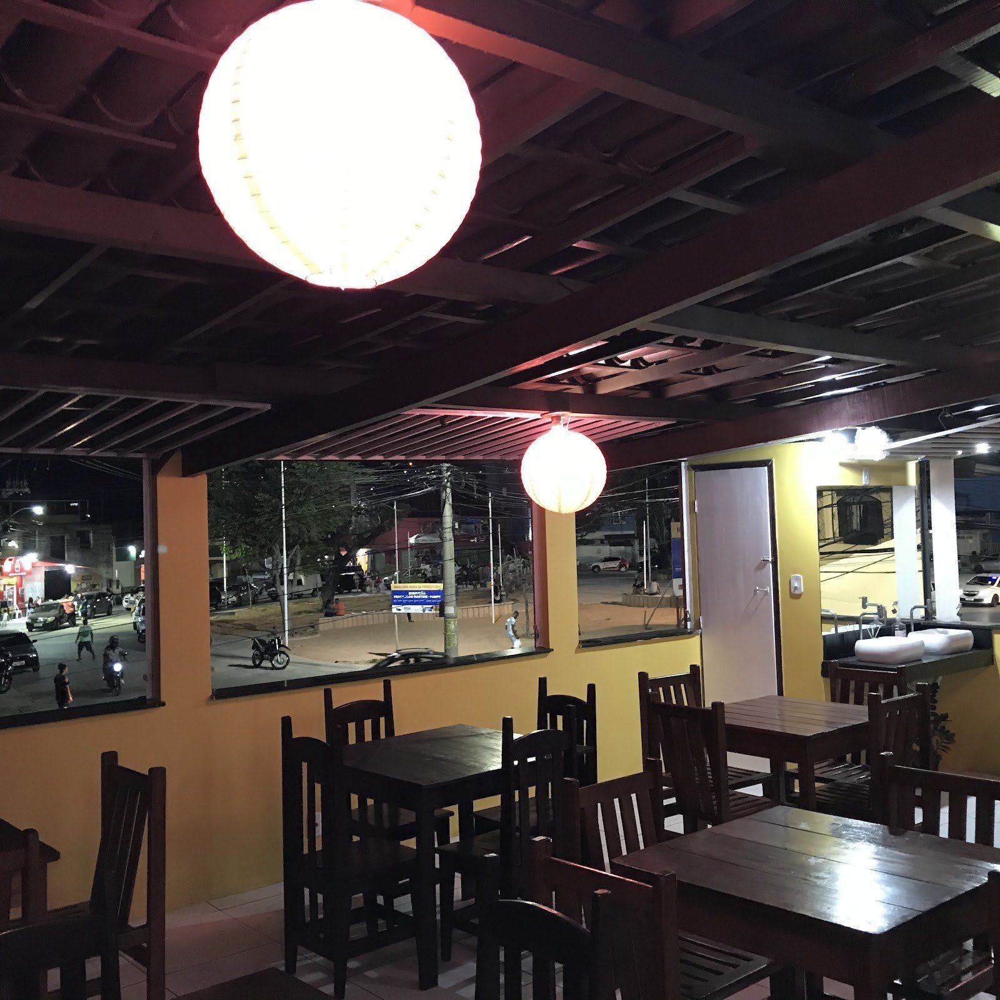

Início · Rodízio Sumô
Rodízio Sumô
Terça, quarta e quinta, das 18h às 22h, só com reserva feita com 24 horas de antecedência. O sushi e muito mais chegam aos poucos, direto na mesa.
Sumô Wine & Sushi BarChef Silvio Trindade · Paripe, Subúrbio de Salvador
Reserva
Escolha a noite e o horário
Valores
Quanto custa
R$ 110,00
Por adulto.
R$ 55,00
Criança de 6 a 10 anos.
Até 5 anos
Não paga.
Bebidas
Não estão inclusas. Taxa de desperdício: R$ 30,00.
Regras
As informações importantes, sem precisar abrir a arte
- Só com reserva. Feita com no mínimo 24 horas de antecedência. “Sem reserva, não realizamos atendimento.”
- Terça, quarta e quinta. Das 18h às 22h. Não há rodízio em feriados e datas comemorativas nesses dias.
- Todo o cardápio. O rodízio inclui todas as opções disponíveis no cardápio. Bebidas não estão inclusas.
- Servido à mesa. Os pratos chegam aos poucos, direto na sua mesa.
- Sem limite de peças. Exceto sashimi: até 10 unidades por pessoa.
- Nada para viagem. O consumo é só durante o rodízio; não é permitido levar o que sobrou.
- Taxa de desperdício. R$ 30,00.
Como é servido
Aos poucos, na sua mesa
“Nosso rodízio é exclusivo: os pratos são servidos gradativamente e diretamente em sua mesa, proporcionando uma experiência mais confortável e personalizada.”Sumô Wine & Sushi Bar

Dúvidas frequentes
Perguntas comuns
Posso ir sem reserva?
Não. A casa publica: “Sem reserva, não realizamos atendimento.”
Tem rodízio em feriado?
Não em feriados e datas comemorativas que caiam na terça, quarta ou quinta.
Posso levar o que sobrar?
Não: o consumo é só durante o rodízio.
Tem limite de peças?
Não, exceto o sashimi: até 10 unidades por pessoa.
Terça a domingo, das 18h às 22h
Monte o pedido ou marque o rodízio: a mensagem chega pronta no WhatsApp da Sumô.
Delivery para 34 bairros do Subúrbio, retirada no balcão em Paripe e rodízio de terça a quinta, com reserva.